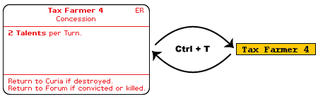

|
|
How to use this module?First, if you should know the rules of Republic of Rome. You can find the rules here, here and here. Back to the module itself. Most important thing to know that you can Transform cards to markers back and forth with right click or Ctrl+T.  Check the game pieces with right click to see the actions you can perform on them. Some examples: You can roll personal/state treasury with Province Markers, increase the count of Knights with Knights markers, send a red card or a Talent to another factions hand, etc. Other important hotkeys:
There are icons on the toolbar to ask for attention, agree, oppose and assassination attempt. The module only shows the topmost card in the main deck and in the discards deck to avoid end of world effect. So don't worry, cards are there. Maybe this should be enough to start the game. Check Scenario Setups tab to see how to start the game fast and easy (I recomment this even for those who know the setup procedure).
|
| Created by Adam Szieberth. Published as Public Domain. |
This Web Page Created with PageBreeze Free Website Builder